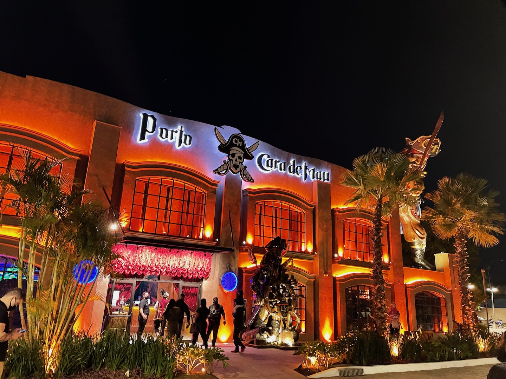
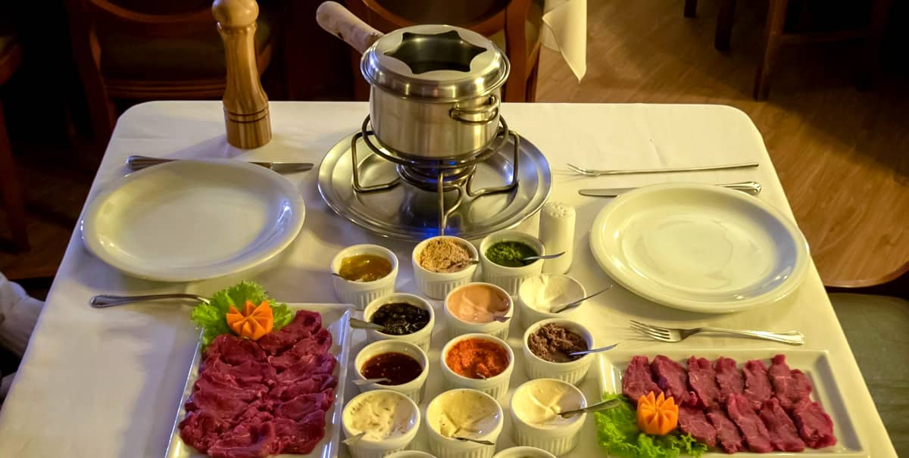
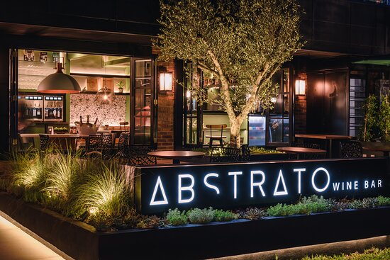

Sucesso em Gramado desde 2018, a pizzaria temática Porto Cara de Mau prepara o desembarque em Porto
Alegre, no Boulevard Laçador.
Cara de Mau é uma pizzaria temática e inspirada nas histórias de pirata e nos sabores dos sete mares.
Delicie-se com 80 variedades de pizzas salgadas e doces, além de calzones de dar água na boca. Entre
nesse barco e aproveite!

O verdadeiro sabor da fondue em uma tradicional casa de Gramado.
Seu estilo europeu, aliado ao requinte e bom gosto do ambiente, proporcionam um cenário de extrema beleza
e romantismo.
Localizado no centro de Gramado, em frente a rótula de acesso à Canela, é um ótimo lugar para um jantar
romântico, para encontrar familiares e amigos ou até mesmo para celebrações.

Em meio a mais de 350 rótulos de vinhos e espumantes nacionais, serviremos a melhor sequência de fondue
de Gramado.
Localizado bem no coração de Gramado, o restaurante D.O Brasil é a mais nova opção gastronômica a todos
os viajantes que estiverem co vontade de jantar em um local aconchegante e bem centralizado.
Localizado na frente do nobre hotel Serrazul, o restaurante D.O Brasil fornece as mais opções
gastronômicas de pratos à la carte, para todos os tipos de públicos e gostos. Nesta atividade a oferta é
exclusiva a Sequência de Fondue. Veja abaixo o que está te esperando no Wine Bar e Restaurante D.O
Brasil.
